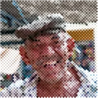

ہاف ٹون

پرنٹ شدہ نقطے جو تصویر کے گہرے حصوں میں بڑے ہوتے ہیں۔
سیٹنگز
| سیٹنگ | قسم | رینج | ڈیفالٹ |
|---|---|---|---|
| سائز | نمبر | 2 سے 200 تک | 10 |
| زاویہ | زاویہ | -360° سے 360° تک | 45° |
| اسٹائل | انتخاب | کلاسک, دو رنگ | کلاسک |
| رنگین نقطے | آن یا آف | – | آن |
| نقطے کا رنگ | رنگ | – | #103152 |
| کاغذ کا رنگ | رنگ | – | #FCECDA |